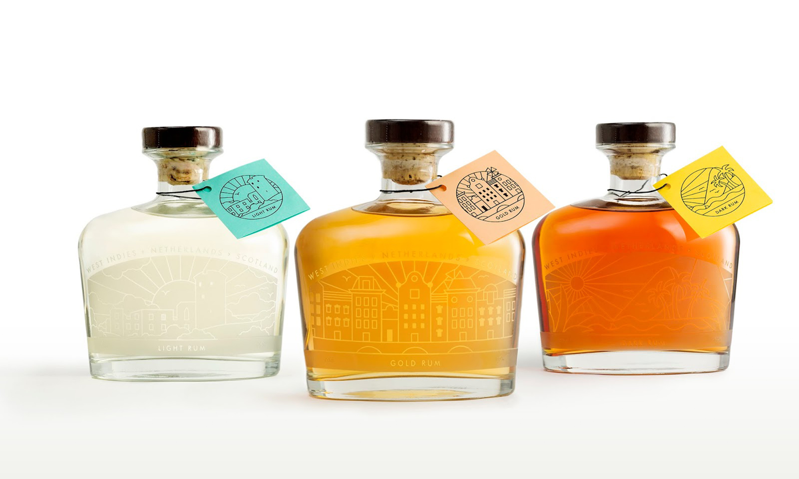
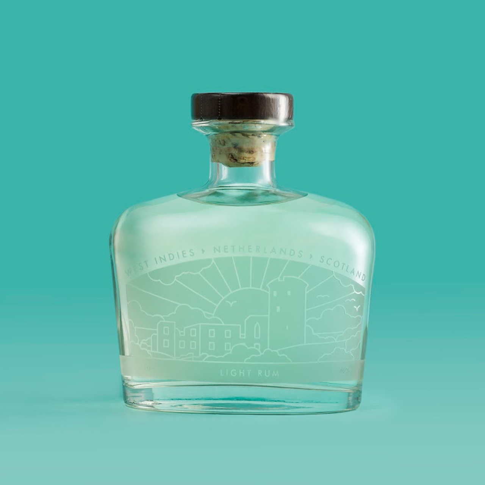
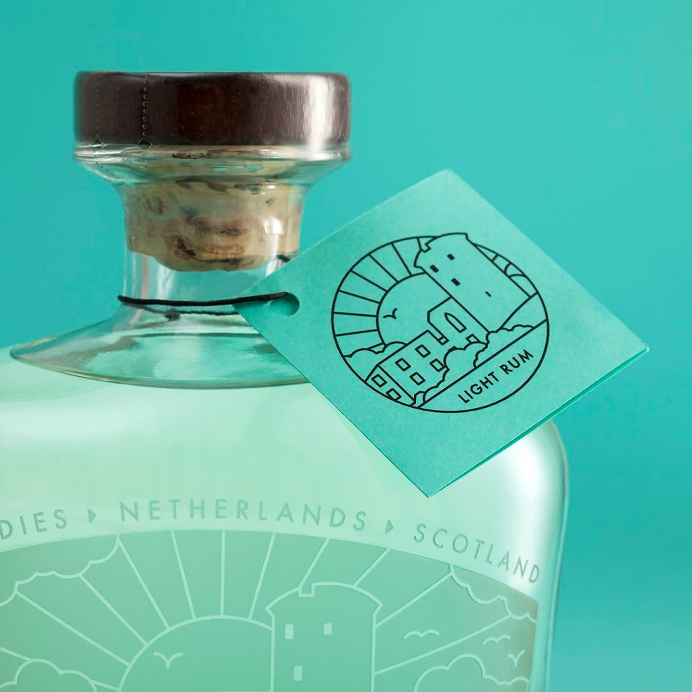
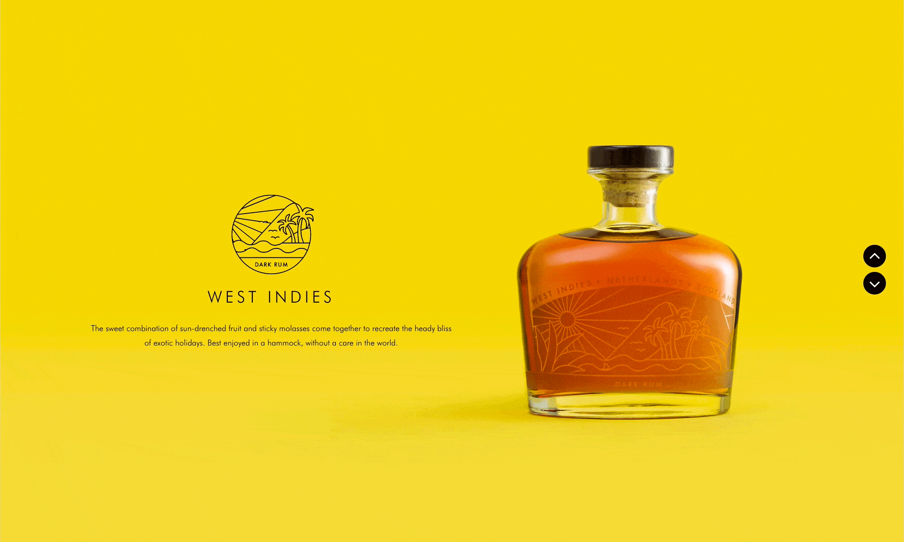

Rum Blender
Journey collection
Web / Product / UI / Packaging / Print
In collaboration with Lisa Adamson, Laura Service and Emma Fraser (while at Front Page)
The challenge was to create a limited-edition rum collection that told the story of Rum Blender, a side project I had recently started with a friend.
It all kicked off one evening after hours, with a group of us gathered around a boardroom table, learning a thing or two about rum — how it’s made, the different styles, what Rum Blender was trying to be — and, inevitably, tasting our way through a flight of seven different rums. There were tasting notes, opinions, scribbles, and by the end of the session, three original blends had emerged to take forward. There were also a number of us who were fairly drunk.

Fast-forward seven months of lunch breaks, early starts, and incremental progress, and we finally signed off the creative to send away for engraving. The concept was to represent the journey the rum takes — from where it’s made, to where it’s blended, to where it’s bottled — through three simple, stylised illustrations.


The first captured a sun-soaked Caribbean island in the West Indies. The second referenced the narrow canal-side buildings of Amsterdam in the Netherlands. The final depicted Bothwell Castle in Scotland. While three different designers worked on the illustrations individually, they were all built on a single, shared grid system we developed to ensure consistency of style, weight, and rhythm across the set.
I’m incredibly proud of this work, but the best part wasn’t just the finished bottles. It was the chance to work so closely with people who brought even more creative energy, passion, positivity, and enthusiasm than I did. It was a balanced, generous, and genuinely rewarding collaboration — one that resulted not only in three beautiful bottles of rum, but in a shared sense of accomplishment and pride.

As Massimo Vignelli once said, “You do design because you feel it inside.” Nobody gets into design for the money. We do it because we can’t help ourselves — because we need to make things, and often it’s our own ideas that we most want to explore.